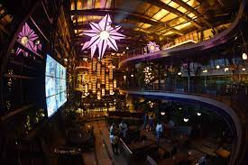
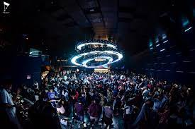

A pub (short for public house) is a drinking establishment licensed to serve alcoholic drinks for consumption on the premises. The term public house first appeared in the late 17th century, and was used to differentiate private houses from those which were, quite literally, open to the public as "alehouses", "taverns" and "inns". By Georgian times, it had become common parlance, although taverns, as a distinct establishment, had largely ceased to exist by the beginning of the 19th century.[1] Today, pubs have no strict definition, but CAMRA states a pub has four characteristics:[2]
| photo | about pub | address | have a glance |
|---|---|---|---|
|  | Prost has always been one of my favourite pubs for good food, good music, great drinks and it's wonderful ambiance. The previous interiors were fancy and really ... | besides Quadro living, Plot # 1026, Rd Number 45, CBI Colony, Jubilee Hills, Hyderabad, Ttdelangana 500033 | |
|  | TPrism club is a pub & a resto bar with a trendy yet elegant ambience with cool vibes & music which makes you groove on the dance floor. | Old Mumbai Hwy, Financial District, Gowlidoddy, Hyderabad, Telangana 500075 | |
| chemistry pub. | 5TH FLOOR 642, Road Number 36, above Tonique, CBI Colony, Jubilee Hills, Hyderabad, Telangana 500033 | comming soon |